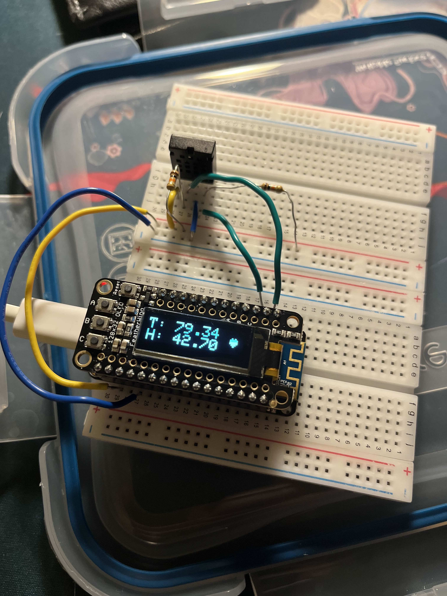

Why did I do it?
I wanted to learn about embedded programming and convince my roomate to let me turn on the AC.What did I accomplish?
Starting with zero knowledge, I started by researching components. I had to:1. Measure the temperature in my room
2. Digitally process the signal from the sensor
3. Display the results
After looking online, I decided to purchase an Adafruit Feather M0 Wifi microcontroller. This board only cost me $10 and was very versatile, even though somewhat overkill for my project. One reason I picked it was that it would interface easily with my chosen screen and temperature sensor. Its I2C data and clock pins were easily accessible, and I only had to use a couple of pull-up resistors to tie in my AM2320 digital temperature sensor. To display the measurements, I wrote some custom "firmware" to read data from the sensor and print text to a screen that was designed to stack on top of my microcontroller. Overall, this project was pretty much my "Hello World" when it comes to embedded programming. It mirrors the classic project not only in its simplicity, but with how tons of stuff happened under the hood that I don't understand yet. 